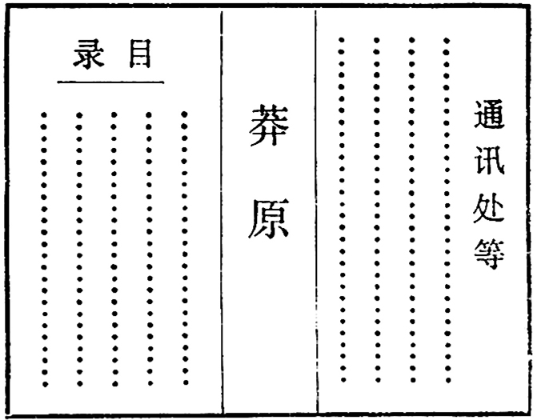

广平兄：
来信收到了。今天又收到一封文稿，拜读过了，后三段是好的，首一段累坠一点，所以看纸面如何，也许将这一段删去。但第二期上已经来不及登，因为不知“小鬼”何意，竟不署作者名字。所以请你捏造一个，并且通知我，并且必须于下星期三上午以前通知，并且回信中不准说“请先生随便写上一个可也”之类的油滑话。
现在的小周刊，目录必在角上者，是为订成本子之后，读者容易翻检起见，倘要检查什么，就不必全本翻开，才能够看见每天的细目。但也确有隔断读者注意的弊病，我想了另一格式，是专用第一版上层的，如下：

则目录既在边上，容易检查，又无隔断本文之弊，可惜《莽原》第一期已经印出，不能便即变换了，但到二十期以后，我想来“试他一试”。至于印在末尾，书籍尚可，定期刊却不合宜，放在第一版中央，尤为不便，擅起此种“心理作用”，应该记大过二次。
《莽原》第一期的作者和性质，诚如来信所言；长虹[98]确不是我，乃是我今年新认识的，意见也有一部分和我相合，而似是安那其主义者。他很能做文章，但大约因为受了尼采[99]的作品的影响之故罢，常有太晦涩难解处，第二期登出的署着CH的，也是他的作品。至于《棉袍里的世界》所说的“掠夺”问题，则敢请少爷不必多心，我辈赴贵校教书，每月明明写定“致送脩金十三元五角正”，夫既有“十三元五角”而且“正”，则又何“掠夺”之有也欤哉！
割舌之罪，早在我的意中，然而倒不以为意。近来整天的和人谈话，颇觉得有点苦了，割去舌头，则一者免得教书，二者免得陪客，三者免得做官，四者免得讲应酬话，五者免得演说，从此可以专心做报章文字，岂不舒服。所以你们应该趁我还未割去舌头之前，听完《苦闷的象征》[100]，前回的不肯听讲而逼上午门，也就应该记大过若干次。而我六十分，则必有无疑。因为这并非“界限分得太清”之故，我无论对于什么学生，都不用“冲锋突围而出”之法也。况且，窃闻小姐之类，大抵容易潸然泪下，倘我挥拳打出，诸君在后面哭而送之，则这一篇文章的分数，岂非当在零分以下？现在不然，可知定为六十分者，还是自己客气的。
但是这次考试，我却可以自认失败，因为我过于大意，以为广平少爷未必如此“细心”，题目出得太容易了。现在也只好任凭排卦拈签，不再辩论，装作舌头已经割去之状。惟报仇题目，却也不再交卷，因为时间太严。那信是星期一上午收到的，午后即须上课，其间更无作答的工夫，而一经上课，则无论答得如何正确，也必被冤为“临时预备夹带然后交卷”，倒不如拚出，交了白卷便宜。
中国现今文坛（？）的状况，实在不佳，但究竟做诗及小说者尚有人。最缺少的是“文明批评”和“社会批评”，我之以《莽原》起哄，大半也就为了想由此引些新的这一种批评者来，虽在割去敝舌之后，也还有人说话，继续撕去旧社会的假面。可惜所收的至今为止的稿子，也还是小说多。
鲁迅。四月二十八日。
注 释
[98] 长虹 高长虹（1898—约1956），山西盂县人，狂飙社主要成员。他于1924年12月认识鲁迅后，得到鲁迅的很多指导和帮助，1925年鲁迅编辑《莽原》时，他是撰稿者之一。1926年下半年，他借口《莽原》编者韦素园压下向培良的稿子，对韦素园进行人身攻击，并对鲁迅表示不满；其后因鲁迅揭穿他假鲁迅之名自我宣传，他即转而对鲁迅进行诽谤和嘲骂。
[99] 尼采（F.Nietzsche，1844—1900） 德国哲学家，唯意志论者，宣扬“超人哲学”。曾任瑞士巴塞尔大学教授。著有《悲剧的诞生》、《札拉图斯特拉如是说》等。
[100] 《苦闷的象征》 文艺论文集，日本厨川白村（1880—1923）著。鲁迅曾译作教材，1924年12月（实际为1925年3月）出版，为《未名丛刊》之一，北京新潮社代售，后由北新书局再版。